During the sixth Century BC (BCE) many territorial states emerged. This Led to the transformation of socio – economic and political life of the people in the Gangetic plains. A new intellectual awakening began to develop in northern India. Mahavira and Gautama Buddha represented this new awakening.
Iron played a significant role in this transformation of society. The fertile soil of the Gangetic Valley and the use of iron ploughshares improved agricultural productivity. In addition, iron facilitated craft production. Agrarian surplus and increase in craft products resulted in the emergence of trading and exchange centres. This in turn paved the way for the rise of towns and cities. Thus, knowledge in the use of iron gave Magadha an advantage over other Mahajanapadas. Thus, the Magadha could establish an empire of its own.
There were two kinds of government in north India during the sixth century BC (BCE)
The term gana means people of equal status. Sangha means assembly. The gana - sanghas covered a small geographical area ruled by an elite group. The gana sanghas practiced egalitarian traditions.
A kingdom means a territory ruled by a king or queen. In a kingdom (monarchy), a family, which rules for a long period becomes a dynasty. Usually these kingdoms adhered to orthodox Vedic traditions.
Janapadas were the earliest gathering places of men. Later, Janapadas became republics or smaller kingdoms. The widespread use of iron in Gangetic plain created conditions for the formation of larger territorial units transforming the janapadas into Mahajanapadas.
(“Great Countries”) Sixteen Mahajanapadas dotted the Indo- Gangetic plain in the sixth century BC (BCE). It was a transition from a semi – nomadic kinship - based society to an agrarian society with networks of trade and exchange. Hence an organized and a strong system of governance required a centralised state apparatus.
There were four major Mahajanapadas
They were
Among the four Mahajanapadas, Magadha emerged as an empire.
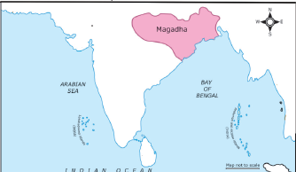
Four dynasties ruled over Magadha Empire.
Magadha’s gradual rise to political supremacy began with Bimbisara of Haryanka dynasty.
Bimbisara extended the territory of Magadhan Empire by conquests and by matrimonial alliances with Lichchhavis, Madra and Kosala. His son Ajatasatru, a contemporary of Buddha, convened the first Buddhist Council at Rajagriha. Udayin, the successor of Ajatasatru, laid the foundation of the new capital at Pataliputra.
Haryanka dynasty was succeeded by the Shishunaga dynasty. Kalasoka, a king of Shishunaga dynasty, shifted the capital from Rajagriha to Pataliputra. He convened the second Buddhist Council at Vaishali.
Nandas were the first empire builders of India. The first Nanda ruler was Mahapadma. Mahapadma Nanda was succeeded by his eight sons. They were, known as Navanandas (nine Nandas). Dhana Nanda, the last Nanda ruler, was overthrown by Chandragupta Maurya.
Sources
Archaeological sources |
Punch Marked Coins. |
Inscriptions |
Edicts of Ashoka, Junagath Inscription |
Secular Literature
|
Kautilya’s Arthasastra Visakadatta’s Mudrarakshasa Mamulanar’s poem in Agananuru |
Religious Literature |
Jain, Buddhist texts and Puranas |
Foreign Notices |
Dipavamsa, Mahavamsa and Indica |
Capital |
Pataliputra (present day Patna, Bihar) |
Government |
Monarchy |
Historical era |
322 BC (BCE) TO 187 BC (BCE) |
Important Kings |
Chandragupta, Bindusara, Ashoka |
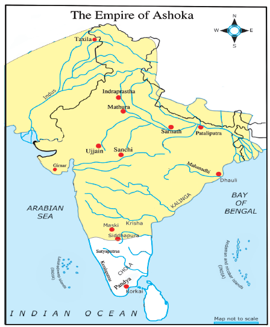
The Mauryan Empire was the first largest empire in India. Chandragupta Maurya established the empire in Magadha.
Bhadrabahu, a Jain monk, took Chandragupta Maurya to the southern India.
Chandragupta performed Sallekhana (Jaina rituals in which a person fasts unto his death) in Sravanbelgola (Karnataka).
Real name of Bindusara was Simhasena. He was the son of Chandragupta Maurya. Greeks called Bindusara as Amitragatha, meaning slayer of enemies. During Bindusara’s reign Mauryan Empire spread over large parts of India. He appointed his son Ashoka as a governor of Ujjain. After his death, Ashoka ascended the throne of Magadha.
Ashoka was the most famous of the Mauryan kings. He was known as Devanam Piya meaning beloved of the Gods.
Ashoka fought the Kalinga war in 261 BC (BCE). He won the war and captured Kalinga.
The horror of war was described by the king himself in the Rock Edict XIII.
Ashoka shines and shines brightly like a bright star, even unto this day, H. G. Wells, Historian
Chandasoka (Ashoka, the wicked) to Dhammasoka (Ashoka the righteous)
After the battle of Kalinga, Ashoka became a Buddhist. He undertook tours (Dharmayatras) to different parts of the country instructing people on policy of Dhamma. The meaning of Dhamma is explained in Ashoka’s – Pillar Edict II
It contained the noblest ideas of humanism, forming the essence of all religions.
He laid stress on
Ashoka sent his son Mahinda and Sanghamitta to Srilanka to propagate Buddhism. He also sent missionaries to West Asia, Egypt, and Eastern Europe to spread the message of Dhamma. The Dhamma-mahamattas were a new cadre of officials created by Ashoka. Their job was to spread dhamma all over the empire. Ashoka held the third Buddhist Council at his capital Pataliputra.
The 33 Edicts on the pillars as well as boulders and cave walls made by the Emperor Ashoka, describe in detail Ashoka’s belief in peace, righteousness, justice and his concern for the welfare of his people.
The Rock Edicts II and XIII of Ashoka refer to the names of the three dynasties namely Pandyas, Cholas, the Keralaputras and the Sathyaputras.
Centralized administration
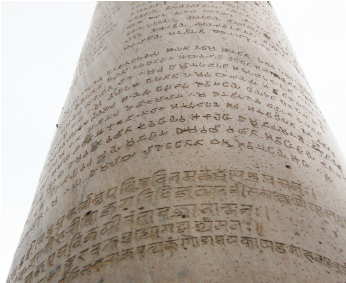
The king was the supreme commander of the army.
A board of 30 members divided into six committees with five members on each, monitored
The punch marked silver coins (panas) which carry the symbols of the peacock, and the hill and crescent copper coins called Mashakas formed the imperial currency.
Trade flourished particularly with Greece (Hellenic) Malaya, Ceylon and Burma. The Arthasastra refers to the regions producing specialized textiles – Kasi (Benares), Vanga(Bengal), Kamarupa (Assam) and Madurai in Tamilnadu.
Main Exports Spices Pearls Diamonds Cotton textiles Ivory Works Conch Shells |
Main Imports Horses Gold Glassware Linen |
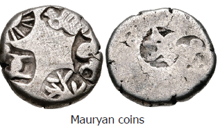
Mauryan art can be divided into two
Indigenous Art – Statues of Yakshas and Yakshis
Royal Art – Palaces and Public buildings, Monolithic Pillars, Rock cut Architecture, Stupas
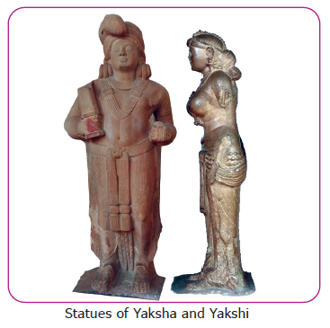
Stupas
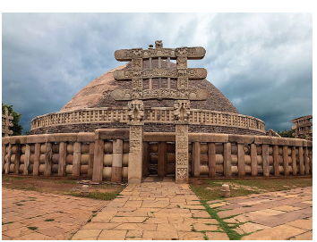
A Stupa is a semi – spherical dome like structure constructed on brick or stone. The Buddha’s relics were placed in the centre of the dome.
Monolithic Pillar – Sarnath
The crowning element in this pillar is Dharma chakra.
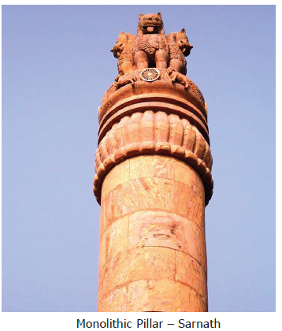
Beginning of Rock cut Architecture Rock – Cut Caves of Barabar and Nagarjuna Hills
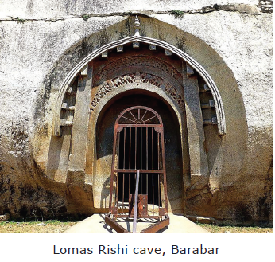
There are several caves to the north of Bodh Gaya. Three caves in Barabar hills have dedicative inscription of Ashoka. And three in Nagarjuna hills have inscriptions of Dasharatha Maurya (grandson of Ashoka).
Ancient name Rajagriha |
Its Modern name Rajgir |
Ancient name Pataliputra |
Its Modern name Patna |
Ancient name Kalinga |
Its Modern name Odisha |
Elsewhere in the world
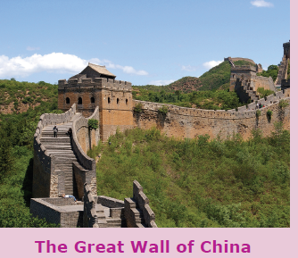
The Great Wall of China is an ancient series of fortification. During third century BC (BCE) emperor Qin-Shi Huang linked these walls on Northern border to protect his empire.
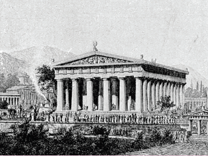
An ancient temple in Olympia, Greece, dedicated to the god Zeus, constructed during fifth century BC (BCE), It is one of the seven wonders of the ancient world.
Egalitarian
a person who advocates the principle of equality for all. (சமத்துவம்)
Monastery
a building in which monks live and worship. (மடாலயம்)
Treatise
a written work dealing systematically with a subject. (ஆய்வுக்கட்டுரை)
Horror
a feeling of fear and anxiety (பேரச்சமும் நடுக்கமும்)
1. 16 Mahajanapadas
Kuru, Panchala, Anga, Magadha, Vajji, Malla, Kasi, Kosala, Avanti, Chedi, Vatsa, Machcha, Surasena, Assaka, Gandhara and Kamboja.
2. Nalanda - UNESCO World Heritage Site.
Nalanda was a large Buddhist monastery in ancient kingdom of Magadha. It became the most renowned seat of learning during the reign of Guptas. The word Nalanda is a Sanskrit combination of three words Na plus alam plus daa meaning no stopping of the gift of knowledge.
3. Megasthenese
He was the ambassador of the Greek ruler, Seleucus, in the court of Chandra Gupta. He stayed in India for 14 years. His book Indica is one of the main sources for the study of Mauryan Empire.
4. Grandeur of Pataliputra
The great capital city in the Mauryan Empire, which had 64 gates to the city with 570 watch towers.
5. Lion Capital of Ashoka
The Emblem of the Indian Republic has been adopted from the Lion Capital of one of Ashokas pillars located at Sarnath. The wheel from the circular base, the Ashoka Chakra is a part of the National Flag.
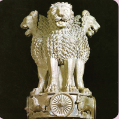
6. An Edict is an official order or proclamation issued by a person in authority or a king.
7. The script of the inscriptions
At Sanchi – Brahmi
At Kandahar – Greek and Aramaic
At North Western part – Kharoshthi
8. The Junagarh and Girnar Inscription of Rudradaman records that the construction of a water reservoir known as Sudarshana Lake was begun during the time of Chandragupta Maurya and completed during Ashoka’s reign.
9. Yakshas were deities connected with water, fertility, trees, the forest and wilderness. Yakshis were their female counterpart.
1. The Kingdom which was most powerful among the four Mahajanapadas
a) Anga b) Magadha c) Kosala d) Vajji
2. Among the following who was the contemporary of Gautama Buddha?
a) Ajatasatru b) Bindusara c) Padmanabha Nanda d) Brihadratha
3. Which of the following are the sources of Mauryan period?
a) Artha Sastra b) Indica c) Mudrarakshasa d) All
4. Chandra Gupta Maurya abdicated the thrown and went to Sravanbelgola along with Jaina Saint dash.
a) Badrabahu b) Stulabahu c) Parswanatha d) Rushabhanatha
5. dash was the ambassador of Seleucus Nicator.
a) Ptolemy b) Kautilya c) Xerxes d) Megasthenese
6. Who was the last emperor of Mauryan Dynasty?
a) Chandragupta Maurya b) Ashoka
c) Brihadratha d) Bindusara
1. Statement (A) Ashoka is considered as one of India’s greatest rulers.
Reason (R) He ruled according to the principle of Dhamma.
a. Both A and R are true and R is the correct explanation of A.
b. Both A and R are true but R is not the correct explanation of A.
c. A is true but R is false.
d. A is false but R is true.
2. Which of the statements given below is/are correct?
Statement 1 Chandragupta Maurya was the first ruler who unified entire India under one political unit.
Statement 2 The Arthashastra provides information about the Mauryan administration
a. only 1 b. only 2 c. both 1 and 2 d neither 1 nor 2
3. Consider the following statements and find out which of the following statement(s) is (or) are correct.
1) Chandragupta Maurya was the first king of Magadha.
2) Rajagriha was the capital of Magadha.
a. only 1 b. only 2 c. both 1 and 2 d. neither 1 nor 2
4. Arrange the following dynasties in chronological order.
a. Nanda – Sishunaga – Haryanka – Maurya
b. Nanda – Sishunaga –Maurya – Haryanka
c. Haryanka - Sishunaga – Nanda - Maurya
d. Sishunaga – Maurya – Nanda – Haryanka
5. Which of the following factors contributed to the rise of Magadhan Empire?
1) Strategic location
2) Thick forest supplied timber and elephant
3) Control over sea
4) Availability of rich deposits of iron ores
a. 1, 2 and 3 only
b. 3 and 4 only
c. 1, 2 and 4 only
d. All of these
1. dash was the earliest capital of Magadha.
2. Mudrarakshasa was written by dash.
3. dash was the son of Bindusara.
4. The founder of the Maurya Empire was dash.
5. dash were appointed to spread Dhamma all over the empire.
1. The title Devanam Piya was given to Chandragupta Maurya.
2. Ashoka gave up war after his defeat in Kalinga.
3. Ashoka’s Dhamma was based on the principle of Buddhism.
4. The lions on the currency notes is taken from the Rampurwa bull capital.
5. Buddha's relics were placed in the centre of the Stupas.
a. Gana |
1. Arthasastra |
b. Megasthenese |
2. religious tours |
c. Chanakya |
3. people |
d. Dharmayatras |
4. Indica |
a. 3 4 1 2
b. 2 4 3 1
c. 3 1 2 4
d. 2 1 4 3
1. Mention any two literary sources of Mauryan period.
2. What is a stupa?
3. Name the dynasties of Magadha.
4. What were the sources of revenue during Mauryan period?
5. Who assisted Nagarika in the administration of towns?
6. What do you know from the Rock Edicts II and XIII of Ashoka?
7. Which classical Tamil poetic works have the reference of Mauryans?
1. What did Ashoka do to spread Buddhism? (Write any three points)
2. Write any three causes for the rise of Magadha.
1. Kalinga war became a turning point in Ashoka’s life. How?
2. Write any five welfare measures you would do if you were a king like Ashoka?
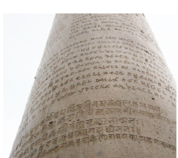
This is the picture of an Ashokan edicts.
a. What are edicts?
b. How are Ashokan edicts useful?
c. Where were these edicts inscribed?
d. Name the script used in Sanchi Inscription.
e. How many Rock Edicts are there?
1. I belonged to Haryanka dynasty. I extended territory by matrimonial alliances. My son is Ajatasatru – who am I?
2. I played a significant role in the transformation of society. I am used in making ploughshare - Who am I?
3. I was known as Devanampiya. I embraced the path of peace - Who am I?
4. I established the first largest empire in India. I performed Sallekhana. Who am I?
5. I am found in the Lion capital of Ashoka. I am at the centre of our national flag. Who am I?
A 1 |
B 2 |
C 3 |
D 4 |
E 5 |
F 6 |
G 7 |
H 8 |
I 9 |
J 10 |
K 11 |
L 12 |
M 13 |
N 14 |
O 15 |
P 16 |
Q 17 |
R 18 |
S 19 |
T 20 |
U 21 |
V 22 |
W 23 |
X 24 |
Y 25 |
Z 26 |
1. The first dynasty that ruled over Magadha was dash (8, 1, 18, 25, 1, 14, 11, 1).
2. Dash empire was the first largest empire (13, 1, 21,18, 25, 1).
3. Dash laid the foundation of the new capital at Pataliputra (21, 4, 1, 25, 9, 14).
4. Dash was one of the main exports (19, 16, 9, 3, 5, 19).
5. Dash became later the most renowned seat of learning (14, 1, 12, 1, 14, 4, 1).
6. Revenue from agricultural produce was called dash (2, 8, 1, 7, 1).
7. The horror of war was described in dash (18, 15, 3, 11, 5, 4, 9, 3, 20)
8. Greeks called Bindusara as dash (1, 13, 9, 20, 18, 1, 7, 1, 20, 8, 1)
9. The crowning element in Saranath Pillar is dash (4, 8,1, 18, 13, 1, 3, 8, 1, 11, 18, 1)
10. Council of ministers were known as dash (13, 1, 14, 4, 18, 9, 16, 1, 18, 9, 19, 8, 1, 4)
1. Field trip to Museum
2. Movie show – about Ashoka and Chandragupta.
1. Mark the extent of Ashokan Empire.
2. Mark the following places on the river map of India
a. Taxila b. Pataliputra c. Ujjain d. Sanchi e. Indraprastha
1. Make a model of Ashoka Chakra.
2. Make a model of Sanchi Stupa.
3. Draw and colour our National Flag.
Name the two kinds of government in North India during 6th century B.C (BCE) Answer |
Who conducted second Buddhist council at Vaishali? Answer |
What is the modern name for Kalinga? Answer |
Town was administrated by dash Answer |
Where was the third Buddhist council convened by Ashoka? Answer |
Name any two major Mahajanapadas. Answer |
Which inscription records the construction of Sudarshana lake? Answer |
Who was the last Nanda ruler? Answer |
Name the silver coin which were in use during Maurian period? Answer |
Refrences